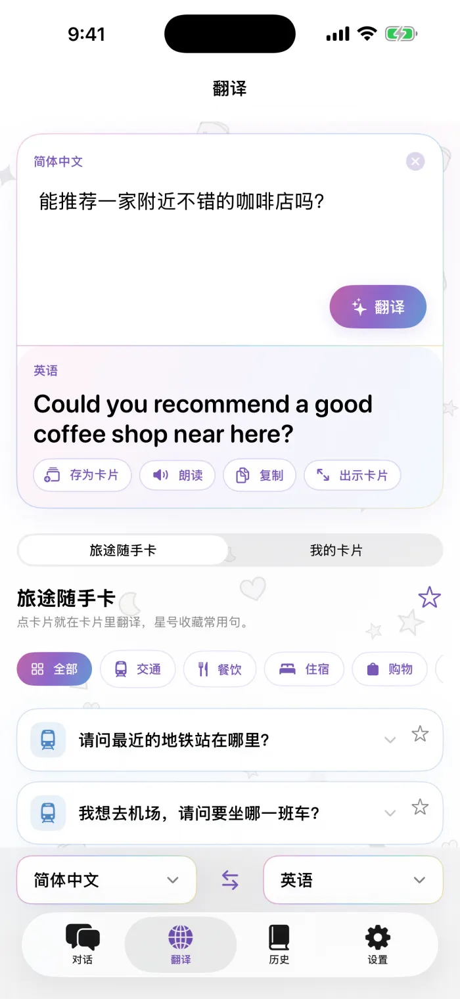
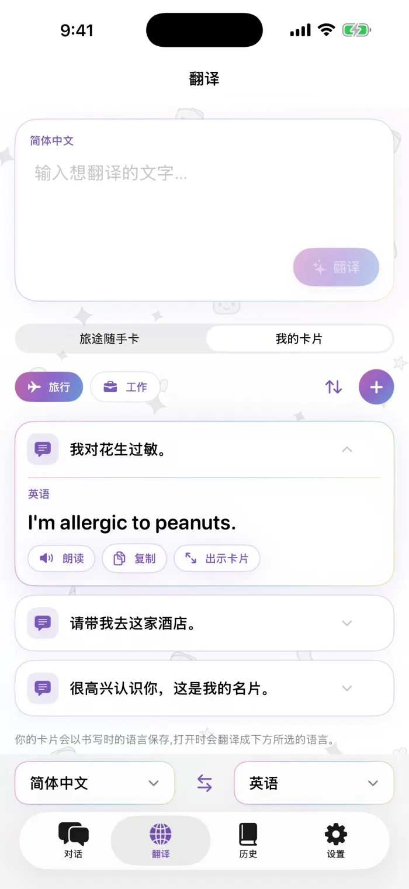
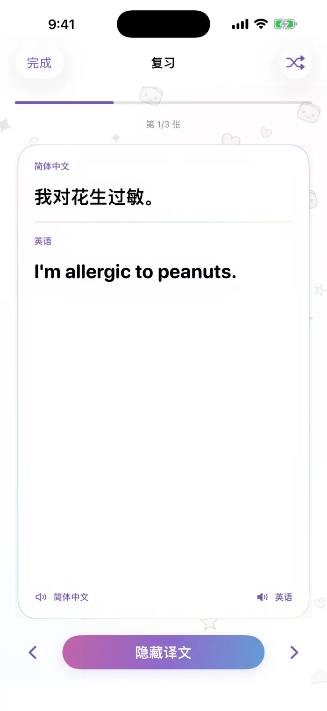

面对面对话
屏幕一分为二，对方那一半会上下翻转，手机放在两人中间就能聊。说话或打字都可以，双方都能看到自己语言的译文。
- 设备端语音识别
- 每句都能重播
- 自动朗读译文
iPhone 翻译 App
面对面交谈，收好自己的常用语卡片，所有内容都直接在 iPhone 上翻译，没有网络也能用。
离线也能翻译：语言包只需下载一次，开启飞行模式也能照常使用。
即将登陆 App StoreiPhone · iOS 18 或更高版本 · 免费下载
请问这家餐厅营业到几点？
Excuse me, what time does this restaurant close?
开着飞行模式也能翻译，带你快速逛一逛。
屏幕一分为二，对方那一半会上下翻转，手机放在两人中间就能聊。说话或打字都可以，双方都能看到自己语言的译文。
输入或粘贴一句话即可翻译。可以拷贝、朗读，也可以显示为全屏大字卡片，给面前的人看。
把最常说的话——旅行用的、工作用的——做成卡片，放进你自己命名、可以调整顺序的卡组。任何译文或历史记录都能存为卡片，下次还能翻译成你选的语言。
交通、餐饮、住宿、购物、问路。轻点卡片，当场就能翻译；常用的卡片可以加星标。
每段对话和翻译都保存在你的 iPhone 上，按日期分组，还能收藏。复习模式会把历史记录变成一张张记忆卡片。
翻译采用 Apple 的设备端模型。语言只需下载一次，没有网络也能继续使用；你说的话、输入的内容都不会发送到任何服务器。
App 的真实界面截图，数字与旁边的说明一一对应。



交谈和翻译所需的功能全部免费。Pro 适合想积累自己卡片的人。
可选按周、按月订阅，或一次性买断终身版。价格由 App Store 以你所在地区的货币显示。